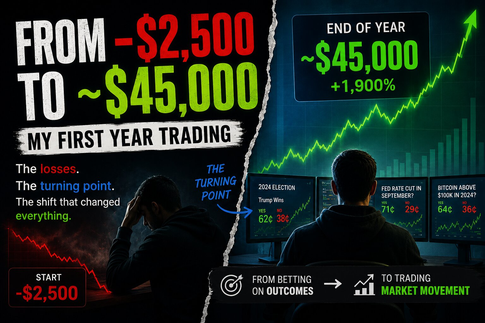
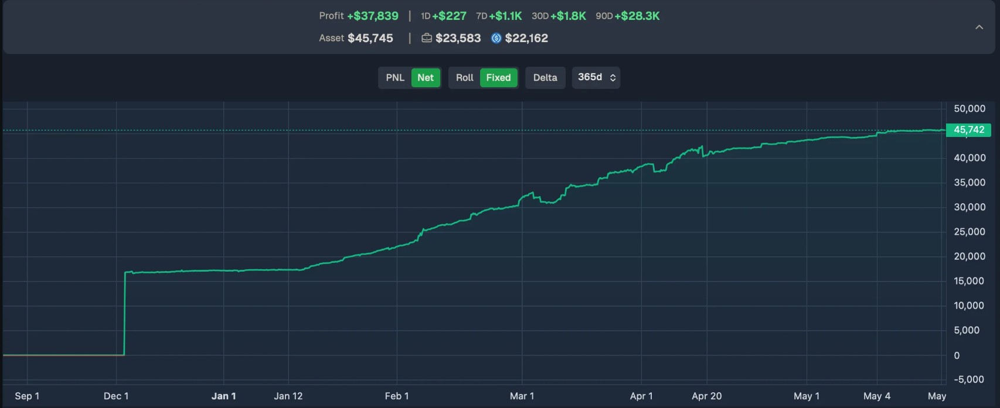

From -$2.5K to $45K: One Trader's First Year on Polymarket

One trader recently shared a full year-one recap from their time on Polymarket, and the shape of it is worth walking through — not because the number at the end is huge, but because the account went negative before it went positive, and the story of how it got from one to the other is more useful than the final balance itself.
How it started: a market that looked like free money
The account began with zero betting background — a rare sports wager here and there, nothing serious, and by their own account a general skepticism toward gambling. What pulled them in was a papal-conclave market they found through a Reddit discussion. Having followed enough commentary on the Church beforehand, they had a decent sense of which candidates were unlikely to win, even without a strong view on who would. A few hundred dollars across several positions turned into a modest profit, and the whole thing felt, in their words, too easy.
The losses that followed
That early win encouraged more trading on smaller markets, until a bet on whether a political figure would accept a foreign gift went badly wrong — the resolution criteria turned out to have nuances the trader hadn't fully priced in, and the position wiped out roughly $1,500. The timing made it sting more than the number alone would suggest. Recovery came slowly, and a second lesson arrived soon after: a large loss on an entertainment-industry market, this time for around $2,000, driven by betting into a space they didn't understand well enough against people who did.
Being down isn't only a balance-sheet problem. The trader described how every subsequent decision started to feel heavier once there was no cushion left — a kind of pressure that quietly distorts judgment in ways that are hard to notice from the inside.
The turning point: watching, not reading
What changed the trajectory wasn't a book or a course — it was wallet-tracking tools that made it possible to follow what consistently profitable traders were actually doing, position by position. That visibility surfaced something the trader hadn't expected: the traders doing best weren't holding positions to resolution at all. They were trading the odds themselves — scalping and swinging price movement — rather than treating each market as a single bet on a final outcome. The market's short-term behavior was the actual game, not just the event it was nominally about.
From there, the process became one of pattern-matching against better traders rather than studying theory in the abstract: watching what they did, when, and why, until the underlying logic started to feel intuitive rather than memorized. One recurring observation was that very different markets tend to behave similarly, because most of them are ultimately driven by the same thing — how people process uncertainty and react emotionally to new information.
Lessons from the full year
Looking back across the twelve months, a handful of takeaways stood out to the trader:
Keep learning. The gap between traders who improve and those who plateau seems to come down to whether they keep updating their approach.
Practice outweighs theory. Reading covers vocabulary; watching real trades build in real time is what builds instinct.
Progress in small increments. Consistency mattered more than any single big swing.
Remember it's zero-sum. Every dollar won is a dollar someone else lost, which means the real goal is finding markets where you're not the weakest participant — not unlike table selection in poker.
Know it isn't for everyone. It takes discipline and emotional control, and without those, the downside can be real.

Where it ended up
Exactly a year after that first papal-conclave trade, the account sat at roughly $45,000 in profit — some spent, some still on the platform, with a stated habit of withdrawing regularly rather than letting balances sit untouched indefinitely. The trader was careful to frame the whole thing as a side activity taking a couple of hours a day, not a full-time pursuit, and pointed back to the eleven-months-earlier version of themselves, sitting at -$2,500, as the point where the only things keeping them in the game were stubbornness and curiosity.
The takeaway
The most useful part of this recap isn't the ending balance — it's the reminder that the losses came first, and that the real shift happened when the trader stopped treating each market as a single bet on an outcome and started paying attention to how price actually moves before resolution. That's a lesson book knowledge alone tends not to teach.
Disclaimer: This post recaps one individual's personal trading experience, as shared publicly online. It is not financial advice, and results like these are not typical or guaranteed. Prediction markets carry real financial risk, including the risk of significant loss, and any decision to trade should be made on your own judgment and risk tolerance.